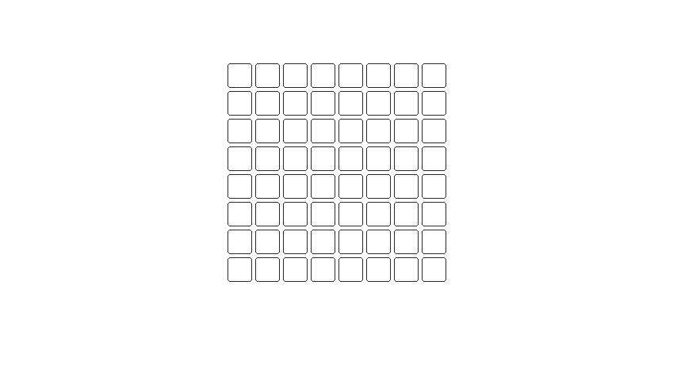
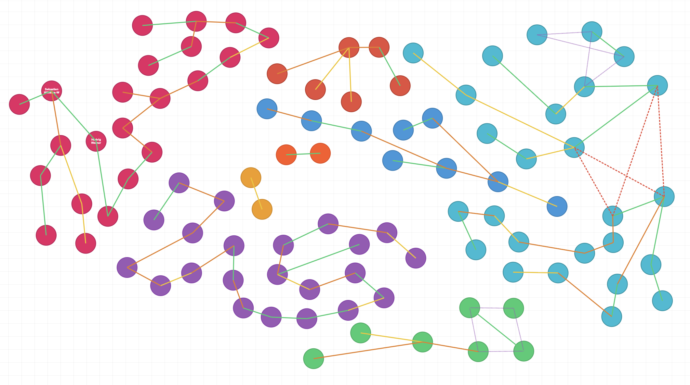
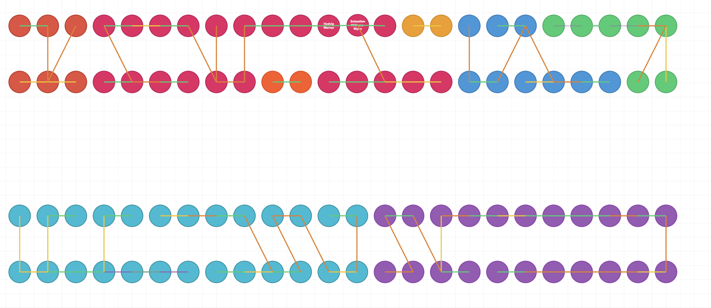
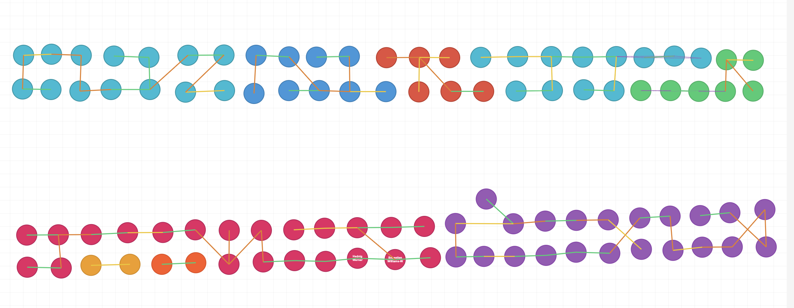

Mon 19 January 2026
Chess Programming - Moving
The "Chess Programming" series:
-
2: (here) Chess Programming - Moving
Attempts to create an automatic chess calculator date back to 1913. Chess engine software has had many optimisations and many minds involved in its evolution.
Last year I wrote on how chess programs track the position of every piece. This article is a slice of the chess engine research I compiled when construct my own chess AI and covers how a chess engine resolves where a piece can move on the board.
You canplay against that chess engine here.
Bit Operations
So far we've covered how to use a 64 bit integer to track the positions of each piece and we've covered how to use bit operations to determine their type and colour.
Now the goal is to compute a 64 bit int that represents the potential positions that a piece can either move-to or attack. This number is called the "moveboard".
If we have a moveboard for a particular piece we can & the
positions of the opposing pieces in order to get attacking
positions and we can subtract the positions of all pieces in
order to avoid moving a piece to an occupied position.
If we simplify this to a single position on the board.
Given that we are able to move to this position, i.e. the
moveboard is 1, and if we consider it occupied by the
opposition, i.e. having a variable called "theirs"
being 1.
Computing the attacks is determined by doing the following:
>>> moveboard & theirs
1
This tells us the position is a valid attack. If the
opposition does not occupy that position (theirs == 0).
Computing for attacks would result in 0. There's nothing
to attack.
To compute valid moves, if theirs is 0 and ours is 1, we
do the following:
>>> moveboard & ~(theirs | ours)
0
This indicates that we can't move to this position. If the result was 1 then it would be empty and it would be a valid position for our piece to move. If we use 64 bit integer instead of a single bit, as shown in the example, the processor can determine the valid moves and attacks across the entire board in a single operation.1
Pawns
There's an edge case with pawns however, they do not use a
moveboard to determine the valid moves and attacks as
the positions a pawn may attack are different to where it
may move. Despite this they are still relatively simple.
Given a pawn in the middle of the board we only need to shift it up to determine its set of moves and after subtracting occupied positions we can determine if the pawn can move ahead or not.
# Shifting up
pawn_position >> 8

To determine if that pawn can attack we shift the pawn twice, "up and left" as well as "up and right". We then check to see if the opposition occupies these positions, this will determine valid attacks for the pawn.
# Shifting "up & left" as well as "up & right"
pawn_position >> 7 && pawn_position >> 9
Knights
Things get more interesting when we compute valid moves and attacks for a knight, but how does a knight move?
The knight is interesting because it's the only piece that is unrestricted by the position of other pieces. I.e. it can jump over pieces to get to where it wants to go. A knight in the centre of the board can move to the following locations:
If we had a
knight sitting on the ith index represented by the "bitboard"
variable we can compute the moveboard for the knight by doing the
following shifts:
(
((bitboard & NOT_H_FILE) >> 15)
| ((bitboard & NOT_A_FILE) >> 17)
| ((bitboard & NOT_GH_FILE) >> 6)
| ((bitboard & NOT_AB_FILE) >> 10)
| ((bitboard & NOT_H_FILE) << 17)
| ((bitboard & NOT_A_FILE) << 15)
| ((bitboard & NOT_GH_FILE) << 10)
| ((bitboard & NOT_AB_FILE) << 6)
)
There are four knights on a chess board, so this calculation would need to be done 4 times for every new board state. Since the performance of a chess engine is largely determined by how far into the future it can look, reducing the number of calculations on each board state can enable the engine to perform a deeper search.
To avoid these computations, we can simply pre-compute the moveboard for every square on the chess board before the game begins. We can then provide the engine with a lookup table, mapping all positions to their moveboard. Avoiding the overhead of computing them during the game.
Sliding
We also do this for the sliding pieces on a chess board. The rooks, bishops and queens move in a way that are considered as sliding.
Again we pre-compute all these positions and store the result in a map, however this isn't the final moveboard for sliding pieces.
Pieces closer to a sliding piece block its path and unlike the knight sliding pieces can't jump over these obstructions. So the resulting bitmask can't be used to determine the valid moves and attacks on its own.
The bitmask is used to identify the potential blockers along a sliding piece's direction of movement. Indicated in orange below:
Once we have identified the potential blockers we use this value to map to the final moveboard. This allows us to look up any moveboard using all combinations of potential blockers during the game and avoids having to shift the piece's position along its sliding axis for every new board state.
As explained we can use a moveboard to compute the
attacking positions (moveboard & theirs). As well as the
valid positions for moving (moveboard & ~(theirs|ours)).
In summary the following steps are needed to find the attacking positions and moving positions for a rook:
- Given the rook's position lookup the bitmask of an
unobstructed rook.
(index -> bitmask) - Use the unobstructed bitmask to find potential
blockers given all the pieces on the board.
(bitmask & (theirs|ours)) - Using the locations of all the blockers lookup the final
moveboard for the rook.
(blockers -> moveboard).
Computing potential blockers can be simplified as there are positions on the board that would never block a sliding piece. Such as positions on the edge of the board.
Given a rook in any of the positions indicated in red we can ignore positions in black as having "potential blockers".
This reduces the overall number of potential blocker combinations we need to consider, improving the engine's start-up time and memory footprint.
We do the same for bishops, except these potential blockers are computed diagonally and finally we compute the moveboard for the queens by combining the outcomes of the rook and the bishop.
Playing Chess
Now that we are able to compute the set of possible moves and attacks for each piece on the chessboard. Picking a piece at random and picking one of the positions from it's set of move and set of attacks will allow a computer to play against us.
This chess engine would still make illegal moves. To play a legal game of chess we would need to consider if the king is in check or if moving a piece might result in your own king being in check.
Finally; in-order-to implement all legal chess moves we would need to extend our move sets to include pushing the pawn twice when it is on its starting position, en passant and the ability to castle your king.
It might be more interesting, however, to dive into how a chess engine evaluates the board state so that it can make an informed decision when it moves a chess piece.
-
Assuming you have a 64 bit processor. ↩
Mon 12 January 2026
Seating Charts
We have two large tables and 100 guests coming to our wedding and we have to figure out how they will be seated. Defining the seating chart tends to be the most enjoyable part of wedding planning1.
After drawing circles for all the seats and guests in excalidraw.com, I began connecting the circles with colourful lines to map out specific relationships. As an example, a couple at the wedding should be seated together.
It dawned on me that this is a constraint satisfaction problem (CSP); and modeling CSPs is something I've been doing for the last year.
Constraint Satisfaction Problems
CSPs are a family of problems where you are required to find the value to a number of variables given certain constraints to those variables. There are many areas that such problems occur, one such area is packing optimisations.
There are software engineering roles that rely on solving these type of questions; typically these roles will include the term "Formal Methods" under their list of responsibilities.
To solve a CSP problem, we begin by modelling the problem mathematically. There are a few notations that allow us to define the variables and constraints for these kinds of problems, the one I am familiar with is called SMT-language.
Here is a simple example where we wish to find valid values for x and y:
(declare-const x Int)
(declare-const y Int)
(assert (> x 0))
(assert (< y 10))
(assert (= (+ x y) 15))
(check-sat)
(get-model)
You may have noticed that this uses prefix notation, i.e.
(> x 0) which is equivalent to (x > 0) in the familiar
infix notation.
To find valid solutions we need a solver such as z3.
If we provide z3
with the file above it will give us a solution for x and
y that fits the constraint. E.g x = 15 and y = 0. There
may be more than one valid solution. Sometimes there is not
solution and it will return unsat. Short for
unsatisfiable.
Knapsack problems
We can use z3 and smt to model and solve a classic knapsack problem. Given the following products:
- Product A has a size of 3 and value of 4.
- Product B has a size of 5 and a value of 7.
Pack a bag with a capacity of 16. Maximizing the total value of the bag.
(declare-const productA_count Int)
(declare-const productB_count Int)
(declare-const total_value Int)
(assert (>= productA_count 0))
(assert (>= productB_count 0))
; Product A: size=3, value=4
; Product B: size=5, value=7
; Bag capacity: 16
(assert (<= (+ (* 3 productA_count) (* 5 productB_count)) 16))
(assert (= total_value (+ (* 4 productA_count) (* 7 productB_count))))
(maximize total_value)
(check-sat)
(get-model)
Solving this tells us that if we pack two of each product we maximize the total value of the bag; this being 22.
Seating
Getting back into the seating chart. I wrote (vibed) a program that allowed me to draw different connections between each of my guests. These connections account for the different constraints we wanted to map onto the guests. So if A and B are a couple, ensuring they sit next to each other is a constraint.
Here is a complete list of the constraints that were modeled:
- Sit next to each other.
- Sit opposite each other. Or constraint 1.
- Sit diagonally across from each other. Or constraint 2.
- Not next to, not opposite and not diagonal from each other.
- A should be next to B OR C.
After drawing all these constraints between our guests this is how the wedding looks:

Green is constraint 1, yellow 2, orange 3, dashed red 4 and dashed purple is constraint 5.
We are seating everyone at two large tables. As would have been done in a classic viking longhouse. In order to model the guests at these tables each guest will need a variable for the position, the side and the table.
The groom will have an assigned seat, in the middle of the first table facing inward, towards the guests. As guest number 1 he would have the following variables:
# table_1: int = 0
# pos_1: int = 12
# side_1: bool = true
This would seat me in the middle of the table looking out
across the room. We then define these variables for all 100
guests. We also need to include a constraint that all the
table_{n} variables must be 0 or 1, since there are only
two tables. Additionally the pos_{n} variables have to be
between [0 and 25) since there are only 25 seats on each side
of the tables.
Constraints
Now we model each constraint listed above. The first constraint states that guest A and B must be next to each other. If we take guests 11 and 12 this would look like the following:
(assert (= table_11 table_12))
(assert (= side_11 side_12))
(assert (or (= pos_11 (+ pos_12 1) (= pos_12 (+ pos_11 1)))))
I.e. Same table, same side but their positions are offset by 1 or -1.
The next constraint allows the guest to
not only sit next to someone but as an alternative they can be
opposite each other. To do this we assign the above
constraint to same_side_const and define a new constraint
assign it to opposite_const and in order to satisfy either of
them we say. (assert (or same_side_const opposite_const)).
Here's the definition of opposite_const:
(assert (= table_11 table_12))
(assert (distinct side_11 side_12))
(assert (= pos_11 pos_12))
I.e. Same table, different sides but same position.
For the 3rd constraint we merge constraint 1 and 2 together. B needs to have a different side to A and the position needs to be offset by 1 or -1.
Using the tool above to define the graph constraints I could then export the constraints to be passed into a script that generates the smt file for z3. It then provided a solution that I could import into the same tool to see a visual representation of how it would seat all the guests. You can see that below:

As you'll notice from the colour of each line, all the constraints are satisfied.2
Results
So after 5 hours was this seating chart useful? Not really...
The guests that are on the edge of each of the clusters weren't really people we wanted to sit together. However the arrangement within each cluster was great.
Was this fun? Totally!
I'm not going to do this again, because I'm not going to be married again, but in the event that I have to create a seating chart for 100 people in the future there are certain things that might provide a better outcome.
Perhaps it would be better to rely on more flexible constraints, as an example instead of saying A and B need to be in close vicinity I would instead say A should sit next to at least B, C or D. Giving more flexibility to who A can be sat next to.
After presenting this analysis to my future wife she showed me how she had laid out the tables. You can see this below.

Since the constraints are already linking the guests, I was able to spot some improvements to the chart and get some value from this effort.
There was another improvement to the modelling I could have made when looking at the final chart.
If we wanted A to sit next to C and A was in a couple with B. I had not considered that it was probably fine for B to sit next to C instead of A. If C would get on with A there's a chance they would also get on with their partner B. So I could have relaxed this constraint and had C sit next to either A or B.
Creating a seating chart is not a recurring problem of mine, so sadly there's no need for me to refine this solution further.
Guests forgetting to tell me that they're coming has also caused me to pull some hair out, as with most math, when it attempts to model the real world.
Mon 22 December 2025
Leadership Offloading
How to scale leadership and accelerate business.
Leadership should not stop at getting people to rally around a single cause. We can judge a leader not only on their ability to provide purpose but also on their ability to scale influence.
Cognitive Offloading
Cognitive offloading is the act of using tools and technology in order to reduce the amount of burden placed on our brains. We rely on taking notes and setting reminders so that we don't have to keep consciously telling ourselves or remembering what was said or what needs to be done.
In the same manner this term inspired leadership offloading where we use our influence and actions in order to steer a business or team in the same direction without needing to be in every meeting and every room.
The influence of clarity
Great leaders tend to be clear and concise in how they give others a sense of purpose. Having a clear sense of purpose is the first step in offloading leadership if we provide team with clear expectations and trust them to perform in their role we leave ourselves free to focus on other critical parts of the business.1
Consistency in decision making is equally important when it comes to scaling your impact. It is through consistency that we can start to affect the decisions of others through influence. A measure of this effectiveness can come from how a colleague may get an answer to their issue from framing the question as if they were going to ask you. If they can get answers through the act of framing the question; then you've provided guidance through influence.
Leaders that don't provide clarity or are wildly unpredictable create more work for themselves. If your cohort would be surprised or are not sure how you might respond then you will get more question and increase the burden of needing to be involved in most decision making.
An area that leaders can practice being consistent is how they draw focus to specific tasks and identify distractions that steer us away from achievements. Informing others of the intent of our actions, as well as how and why something aligns with business objectives can inform others of how we are making decisions. Leaders that keep these reasons to themselves are often those that are afraid of their cohort's success and use opaque information to serve their own advantage.
The influence of action
The rumour mill is another surface of influence. Stories and tales about a leader's reaction to certain characters and how they express their expectations can circulate large organisations. Through mimicry this can create cohesion or division depending on the behaviours they target and expressed.
Leaders must be on the look out for opportunities that present concrete examples what the business values. Through their own actions or through promoting the actions of others.
We should not rely on demanding behaviours vocally or use bureaucratic checkboxes to identify talent. If you want people to behave in a certain manner, leaders must be the first to provide the examples of how others can do it.
If new joiners and juniors are not asking enough questions perhaps it is because the leaders themselves are quiet.
The influence of knowledge
It is far better to offload knowledge than to restrict the team's capacity by becoming a bottleneck. Leaders should find all manners and ways of being useful without being present. One such way is by jotting down documentation and notes. Overcoming a challenging task is an experience that should be shared. We must hold the hope that the next person on a similar task can be provided with a smoother course. Instead of facing the problem again from step one.
Additionally this helps us avoid repeating the same mistakes. We don't need to restrict this to technical process knowledge. We can learn from a negative experience from candidates during the hiring phase or how a sensitive topic was raised among the team.
Leaders can encourage TDDs, post-mortem write-ups and even to make rough notes in places that are discoverable. Starting with a few pointers is better than starting from no-where and these all increase the impact one can have across a business.
Those that play the game politically and keep their cards close do so to the company's and their own detriment as this hampers influence and the scale in which you can exert impact.
Even if these notes haven't found an audience, showing the effort and having the intent can inspire others to share information. Sooner or later you will have an environment where colleagues can find context and knowledge far easier than before.
The more context and awareness people have at work. The more valuable they can be. Leading to a higher chance of moving the company from maintenance to growth.
Nudge
Don't only be a consumer of the company's culture, actively contribute to it. A positive culture and leading through example will shift the business into one that shares knowledge and has open collaboration.
It is through the subtle nudges of behaviour and habit that we can compound the impact of our teams and spread influence, all without being in the room.
-
Developing yourself can also be considered critical. ↩
Mon 15 December 2025
Power Users
Information workers can no longer build their career on asymmetric process knowledge. The person in the office that knew how to work the niche corporate workflow to get their way will be replaced by documentation and an MCP server.
A large overhead for new employees is understanding processes at a company or relying on someone to inform them how things are done. The archetype of that odd senior taking pride in the ability to recall the weird edge cases of the internal admin portal hasn't left yet.
Products will change
Products that avoid allowing their user to voice demand, intentions and needs; will soon feel like exploring a webpage built in the 90s, cute, quirky and stuck in the past.
The need for an experienced power user has been replaced by a Claude or a Gemini. If the LLM can't do it, should we deprioritise it and focus on the things it can do? We've never had time to explore product features and it doesn't help when the UI isn't sorting the buttons by their relevancy to the problem I am having, there's a gap here and your competitor might be offering me a quicker route to market.
UX design and effort is built around imitating interfaces that are already familiar to the audience, for example we still use keyboards optimised to avoid jamming the hammers in a typewriter, a problem modern keyboards no longer have. There's a learning curve that needs to be overcome when using systems, new and old.
The interface can create friction.
We are shifting our interactions with the product to be ask and you shall receive.
If you aren't empowering the ordinary to become power users over night you continue to have an under utilised product with features that customers need but can't find. Search is more relevant than ever.
Don't leave features on the table. Create the power customers.
As an aside my grandmother no longer needs me to teach her how to upload images to instagram. It would appear her ChatGPT assistant has taken my job.
Learning will change
Software has had the most prevalent increase in power users; here the iteration cycle for learning has diminished significantly. If you've built your career around building products through proof, developed learnings and iteration, that muscle now allows you to run micro tests 500 times a day.
The gap self learners and builders are creating will only increase as we've exposed them to a tutor with 24/7 office hours. Some might argue that the models are not deterministic but I'd lean more towards a computer that has read the entire corpus of human experience for references than a tutor that hit their Goodreads target of 12 books this year.
Anecdotally; the cycle time of learning to code used to be about 20mins of searching or syntax look ups. That has been cut down to seconds and if OpenAI is giving us garbage we can test if it works quicker than it can write. There are few industries that can give feedback on a decision as quick. In some industries you have retired by the time a decision unravels.
The speed at which adopters can
upskill has plummeted but that's only if they're conducting
a piecemeal development approach and not generating an
entire slop product or forgetting why there are files
in a folder called src/.
As with science there's no way to determine what change led to what outcome if we are changing everything all at once. Don't replace ceteris paribus with prompt-and-pray.
Sat 11 October 2025
Style
In 2017 Google did a collaboration with ACROSS, a media research institute for fashion and culture. In the article they published; they correlated the style and clothing on the streets of Tokyo to the mood, economy and politics within Japan. At the height of the 1980s bubble economy; streetwear had a strong brand culture, it was important that the label was luxury and visible on clothing. After the economy slowed down there was a shift towards a more conservative style and any indication of brand was seen as unpopular.
What decides the clothes we wear and what changes these decisions?
Signalling
As much as we would like to say that we use clothes to express our own individuality, I believe the choices we make our largely driven by others and how they perceive us. It is an estimate of other's perception that determines how we choose clothing otherwise a toga would be as normal as suit. We are also concerned with signals that might cause confrontation or alienation.
If people are willing to go through the effort of changing their name or code switch in order to avoid bias, prejudice or create familiarity then this behaviour is undoubtedly represented in our presentation.
When it comes to style I believe most people aim to avoid being controversial and often offload thinking about what they wear by relying on those around them. This is why we see groups, despite believing in their own personal uniqueness, wear the same thing. This is why if you are wearing sweatpants on Monday you can't sit with us.
The Generational Caveat
Before diving into observations on attire we should address that culture and economics form different groups of people and generalisations can't be drawn across these clusters. My Gen Z sister targets second-hand clothing which she has said is situated in the realm of 'ugly is cool' but not so ugly that it is just ugly. An essay on Gen Z would require some full-time research, beyond what I am capable of on a Sunday.
My insight is probably very yuppie, very millennial.
London
Observing some of London's street style over the last three years I believe we can see a similar attachment of style to the economy and politics. Beyond the drive of person A is liked and wears B therefore B is going to catch on, I think the economy and mood of London contributed to a rise of the Carhatt style aesthetic due to a shift away from conservatism.
The Carhartt's WIP label started in 1994, it's first store was opened in London in 1997. Traditionally a workwear brand they're a company that have grants for apprenticeships called the "Love of Labor Grant". So a shift away from pretentious conservatism towards a more labor focused worker label seems to fly.
Perhaps wearing Carhartt signals you're fine with being associated with left leaning ideas and are against twelves years of Tory austerity. However Carhartt allows you to keep a level of conspicuous consumption since nothing says "I have disposable income" like a painter's jacket without paint or a welder's jacket without scuff.
We can see this in the worker style jackets being released by a growing number of brands each winter. They're the modern day denims so I can assume we will start seeing them being sold with scuff and holes for twice the price if portraying a hardy character catches on.
The Outdoors
I made an observation that caught attention; stating "Nothing says 'cost of living crisis' like wearing your Arc'tyrx jacket to Lidl". This is funny for a few reasons; before the brand gained it's street cred it was a highly technical, high performance outdoor brand - typically these jackets go for £450-£1000 at retail. So this man is concerned about cost cutting food habits and doing a weekly shop at Lidl, but when it comes to his appearance let's not hold back. He's effectively wearing a tuxedo for the line at the soup kitchen.
Arc'tyrx hasn't been the only outdoor brand that has gained popularity, The North Face had it's lime light in streetwear and Patagonia was used by people tied to their computers to indicate they have hobbies outside of the office.
While I do think there's been a mood to shift toward a more labour focused work attire1. This is driven more by economics than political signaling. We've seen an interest in the traditional Barbour style jacket being hung up in Uniqlo and M&S. While these may be affordable alternatives, Barbour is not typically associated with taking down drywall but shooting animals on an estate; the thing that the original Barbour jacket and the brands I've mentioned above have in common is their durability and quality.
These brands are popularizing alongside the term 'cost-per-wear' and perhaps others have found longevity in these garments. The weather being hotter and colder is also asking our garments to provide both style and function.
Montbell a brand that's slogan is 'Function is Beauty' recently opened their first store in the UK and 14 of the jackets on their site are currently sold out, which shows there is still demand for functional outdoor clothing.
Durability Fights Inflation
Growing up I learnt that purchasing goods at a whole sale price not only offers a discount from buying one item at a time but shops that sell individual items can increase prices over time and having purchased all the loo paper you need for the year let's you fight those inflationary pressures while keeping your bum clean.
It was the durability of jeans that caused their rise in popularity, more so than their representation among the miners.
Thanks to their new near-indestructibility, Levi’s became the clothing of choice for the rugged, hodgepodge band of workers, outcasts, entrepreneurs and outlaws building America’s future.
If we were to contrast the clothes we wear today to the disposable paper dresses that were the peaked of style in the 1960s there's a clear shift towards the functional and durable. The alternative is second hand and upcycling which offers many hidden gems and even among the 2nd hand market there's a higher bid for clothing that appears durable and long lasting.
Could I be alone in wanting my clothes to last longer?
-
Are we bound to see a resurgence of the double denim? ↩